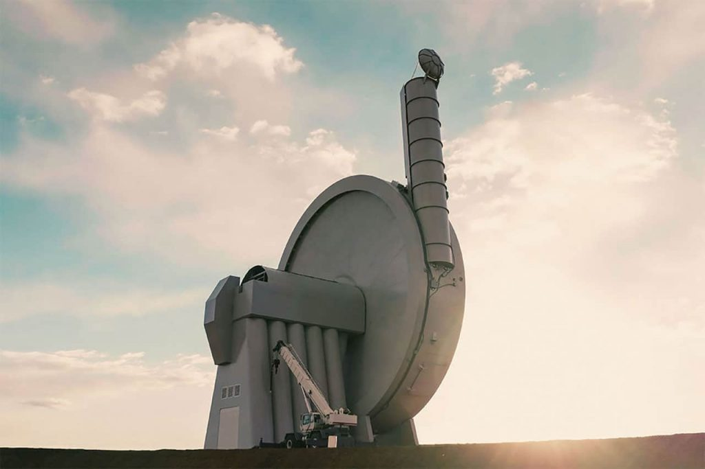

အခု နည်းလမ်းကို SpinLaunch ကုမ္ပဏီက တီထွင်ခဲ့တာ ဖြစ်ပါတယ်။ ဒီနည်းက သီအိုရီ အရတော့ သိပ်ပြီး ထူးဆန်းတဲ့ နည်းပညာ မဟုတ်ပါဘူး။
ကျွန်တော်တို့ ကျောက်ခဲကို လွှဲပြီး ပစ်တဲ့ လောက်လွှဲ တွေ့ဖူးကြတယ် မဟုတ်လား။ ကြိုးခပ်ရှည်ရှည် ထိပ်မှာ ခဲထည့်ဖို့ အိပ်ကလေး လုပ်ထားပြီး ကြိုးကို ပတ်ပြီး လွှဲပစ်တာလေ။ Sling shot လို့ ခေါ်တာပေါ့။
ဒါကို မျက်စေ့ထဲ မမြင်ရင် ကျောက်ခဲ တစ်လုံးကို ကျိုးတစ်ချောင်းနဲ့ ချည်ပြီး ဝှေ့ကြည့် လိုက်ပါ။ ဝှေ့ရင်း အရှိန် ရလာတဲ့ အခါ ကြိုးကို လွှတ်လိုက်ရင် ကျောက်ခဲက အရှိန်နဲ့ လွင့်ထွက် သွားတာ တွေ့ရပါ လိမ့်မယ်။ အခု ဂြိုဟ်တု လွှတ်တာကလဲ ဒီ သဘောကို အသုံးပြု ထားတာပဲ ဖြစ်ပါတယ်။
အခု စမ်းသပ်မှုမှာ သဘော တူညီ မှုအရ SpinLaunch က တည်ဆောက်ထားတဲ့ Suborbital Accelerator Launch System လောက်လွှဲကြီးကို အသုံးပြုပြီး နာဆာရဲ့ ဂြိုဟ်တုနဲ့ အခြား ကုန်ပစ္စည်း တွေကို သယ်ဆောင်နိုင်မယ့် ကုန်တင်ယာဉ်ကို အသံထက် မြန်တဲ့ အလျင်နဲ့ လွှတ်တင်မှုကို စမ်းသပ်မယ်လို့ သိရပါတယ်။

SpinLaunch ရဲ့ လောက်လွှဲ စနစ်မှာ အဓိက ပါဝင်တဲ့ အစိတ်အပိုင်း ကတော့ အလျား ပေ ၃၀၀ ခန့် ရှည်တဲ့ လက်မောင်းကြီးပဲ ဖြစ်ပါတယ်။ ဒီ လက်မောင်းကြီးကို ကာဗွန် ဖိုင်ဘာနဲ့ ပြုလုပ် ထားပါတယ်။ ဒီ လက်မောင်းကြီးကို သံမဏိနဲ့ ပြုလုပ်ထားတဲ့ လေဟာနယ် ပစ်လွှတ်ခန်း ထဲမှာ ထည့်သွင်း တည်ဆောက် ထားပါတယ်။
ဒီ လက်မောင်းကြီးရဲ့ လွှဲအားနဲ့ ဂြိုဟ်တု အငယ်စား တွေကို တစ်နာရီ မိုင် ၅,၀၀၀ အလျင်နှုန်းနဲ့ ပစ်လွှတ်နိုင်မယ်လို့ ဆိုပါတယ်။
အခု နည်းပညာကို အသုံးပြု ခြင်းအားဖြင့် ပုံမှန် ဂြိုဟ်တု ပစ်လွှတ်မှု တွေမှာ လိုအပ်တဲ့ လောင်စာရဲ့ ၃၀ ရာခိုင်နှုန်း လောက်ပဲ လိုအပ်မယ်လို့ ဆိုပါတယ်။ ဒါ့အပြင် ရှုပ်ထွေးပြီး ကုန်ကျစားရိတ် များတဲ့ လွှတ်တင်ရေး အဆောက် အဦတွေ တည်ဆောက်ခလဲ သက်သာ သွားမှာ ဖြစ်ပါတယ်။
ပြီးခဲ့တဲ့ ၂၀၂၁ ခုနှစ် အောက်တိုဘာ လက SpinLaunch ရဲ့ ပထမဆုံး စမ်းသပ် ယာဉ်ကို အောင်မြင်စွာ ပစ်လွှတ် နိုင်ခဲ့ ပါတယ်။ ဒီ စမ်းသပ်မှု အပြီးမှာတော့ အလေးချိန် အမျိုးမျိုး ရှိတဲ့ စမ်းသပ်ယာဉ် တွေကို အမြန်နှုန်း တစ်နာရီ မိုင် ၁,၀၀၀ နှုန်း အထိ အောင်မြင်စွာ စမ်းသပ် ပစ်လွှတ် နိုင်ခဲ့တယ်လို့ ဆိုပါတယ်။
ကမ္ဘာ့ပတ် လမ်းကြောင်းထဲကို အာကာသယာဉ် လွှတ်တင် စမ်းသပ် မှုကိုတော့ လာမယ့် ၂၀၂၅ ခုနှစ် အတွင်းမှာ ပြုလုပ် သွားမယ်လို့ သိရပါတယ်။
Reference: SpinLaunch to test its unique, low-cost launch system with NASA payload | Inceptive Mind